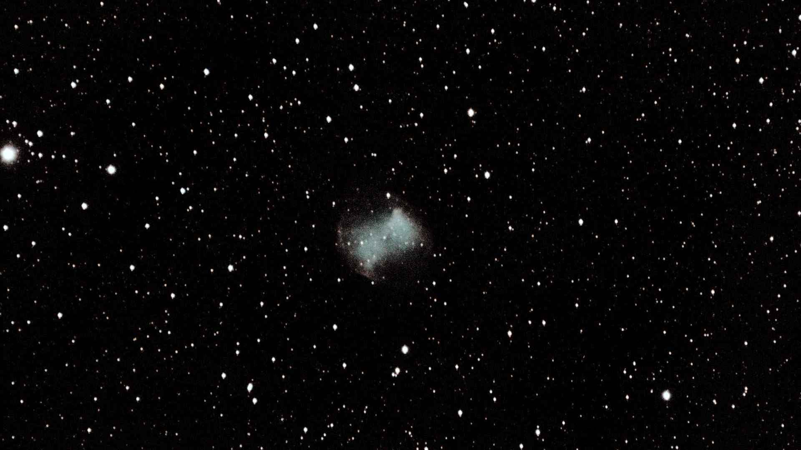
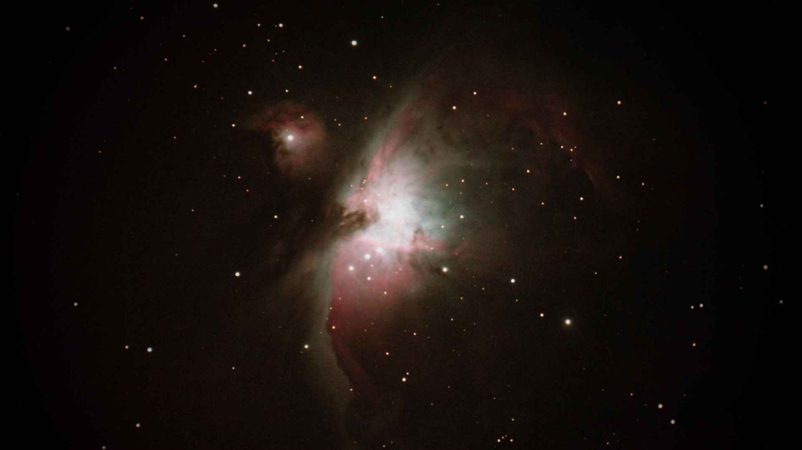
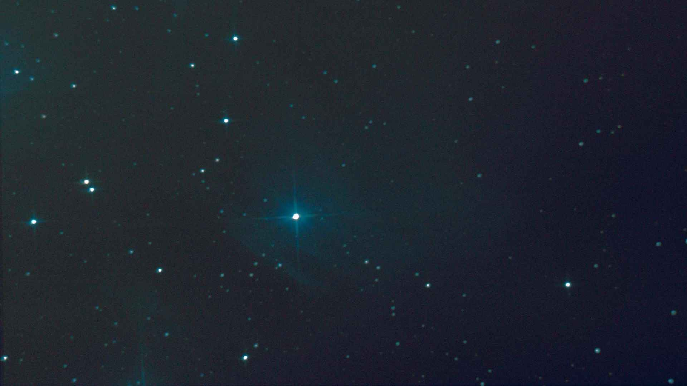

The Great Orion Nebula, Horsehead Nebula and the Flame Nebula
21/01/2023
Saint-Veran, France
Sony ILCE-7SM3 @ ISO64000
Tamron 35-150 f2-2.8 @ 150mm f2.8
978x1s
Andromeda Galaxy (M31)
21/01/2023
Saint-Veran, France
Sony ILCE-7SM3 @ ISO25600
Tamron 35-150 f2-2.8 @ 150mm f2.8
88x1s

C2022 E3 (ZFT)
30/01/2023
Saint-Esteve-Janson, France
Sony ILCE-7SM3 @ ISO4000
Tamron 35-150 f2-2.8 @ 150mm f2.8
26x10s
Thor's Helmet (NGC2359)
25/01/2023
Saint-Esteve-Janson, France
Sony ILCE-7SM3 @ ISO1600
Mak127 1500mm f11.8
15x242s

Dumbbell Nebula (M27)
05/07/2022
Saint-Esteve-Janson, France
Canon EOS 600D
Mak127 1500mm f11.8
50x120s

Triangulum Galaxy (M33)
13/09/2020
Saint-Esteve-Janson, France
Canon EOS 600D
Dob300 1500mm f5

Orion Nebula (M42)
15/09/2020
Saint-Esteve-Janson, France
Canon EOS 600D
Mak127 1500mm f11.8

Merope Nebula (NGC1435)
13/09/2020
Saint-Esteve-Janson, France
Canon EOS 600D
Dob300 1500mm f5